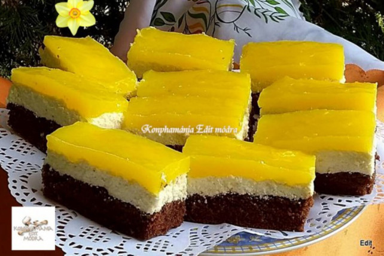

Kókuszgolyó
Hozzávalók
- 50dkg darált háztartási keksz
- 10dkg vaj
- 10dkg porcukor
- 1csomag vaníliás cukor
- 2ek kakaó
- 2dl tej
- 0.5tk rumaroma
- 10dkg kókuszreszelék

Fantaszelet
Hozzávalók
- 6 tojás
- 6ek porcukor
- 1dl étolaj
- 4ek liszt
- 0.6dkg sütőpor
- 2ek kakaópor
- 25dkg vaj
- 20dkg porcukor
- 50dkg tehéntúró
- 1.2dkg vaníliás cukor
- 1db citrom reszelt héja
- 8dkg vaníliás pudingpor
- 7dl Fanta szénsavas üdítő
- 4ek cukor
Elkészítési Javaslat
A tojásokat a cukorral 10 perc alatt habosra keverjük, ezután hozzáadjuk az étolajat. A
lisztet, a sütőport és a kakaóport összekeverjük és egy fakanállal a tojásos masszához
keverjük. Egy 23 x 34 cm-es tepsit sütőpapírral kibélelünk és beleöntjük a masszát.
Előmelegített sütőben 180 fokon 25 perc alatt készre sütjük.
A krémhez a vajat, a porcukrot, a villával összetört túrót, a citromhéjjal és a vaníliás
cukorral alaposan kikeverjük, majd a kihűlt piskótára simítjuk és hűtőbe tesszük, amíg
elkészítjük a mázat.
A mázat ugyanúgy készítjük el, mintha pudingot főznénk, csak most nem tejjel készül, vagyis
a pudingport a szénsavas üdítővel és a cukorral sűrűre főzzük. Egy szép átlátszó
narancssárga krémet kapnunk, amelyet egy kicsit hűlni hagyunk. Ha langyosra hűlt, a túrós
krémre simítjuk és 2 órára hűtőbe tesszük.
Albert Kekszes Sütemény
Hozzávalók
- 10dkg cukor
- 3dkg kakaópor
- 2csomag csokis pudingpor
- 15dkg margarin
- 1dl kávé
- 2csomag Albert keksz
Elkészítési Javaslat
A sütihez a cukrot, a kakaóport és a csokis pudingport összekeverjük.
A margarint egy lábasban felmelegítjük, hozzáöntjük a kávét és a tejet. Amikor a margarin
elolvadt, akkor csomómentesen elkeverjük benne a cukros, kakaós, pudingporos keveréket és
gyakran megkevergetve krémesre főzzük.
A csokikrémmel megkenjük a kekszeket, majd hosszú rúddá összeragasztjuk őket. Alufóliába
csomagolva néhány órára, vagy egy éjszakára a hűtőbe tesszük. Amikor átpuhult, a rudat
ferdén felvágjuk, és tálra rendezve kínáljuk.

Pihe-Puha Mézeskalács
Hozzávalók
- 50dkg liszt
- 15dkg porcukor
- 1ek mézeskalács fűszerkeverék
- 1.5tk szódabikarbóna
- 15dkg puha vaj vagy margarin
- 1.25dl méz
- 1db tojás
- 0.5db narancs reszelt héja
Elkészítési Javaslat
A sütőt melegítsük elő 200 fokra. Két tepsit béleljünk ki szilikonos sütőpapírral.
A hatlapos tésztájához a szalalkalit futtassuk fel egy kevés tejben.
A lisztet keverjük össze a sóval és a cukorral, majd morzsoljuk össze a zsírral és a vajjal.
Adjuk a lisztes keverékhez a tojást, a tejes szalalkalit, és még annyi tejet, hogy jól
nyújtható tésztát kapjunk.
Osszuk a tésztát hat egyenlő súlyú adagra, majd egyenként nyújtsuk ki őket 2-3 mm vastagságú
lapokra.
A tésztalapokat süssük az előmelegített sütőben, amíg a szélük barnulni kezd. Ekkor még
kicsit puha a teteje, de nem szabad tovább sütni. Hűlés közben meg fog szilárdulni.
A krémhez a tojássárgákat 4 evőkanál cukorral habosítsuk ki, majd adjuk hozzá a lisztet is
és keverjük csomómentesre. Fokozatosan öntsünk hozzá 2 dl tejet és ezzel is keverjük
egyneművé.
Egy lábasba szitáljuk bele a kakaóport, adjuk hozzá a többi cukrot és a vaníliás cukrot, a
maradék tejet, és addig melegítsük, amíg a cukor elolvad. Vegyük le a kakaós tejet a tűzről,
pár kanállal adjunk hozzá belőle a tojásos masszához (hőkiegyenlítés), majd az egész tojásos
keveréket öntsük vissza a lábasban lévő kakaós, cukros tejhez. Tegyük vissza a tűzre, és
fűzzük sűrű pudingszerű krémmé. Ekkor vegyük le a tűzről és még forrón keverjük el benne a
vajat.
Hagyjuk a krémet kissé kihűlni, hogy kenhető állagú legyen, majd még langyosan töltsük be
vele a tésztalapokat. Takarjuk le egy sütőpapírral és tegyünk a tetejére egy könnyű
vágódeszkát, hogy szép egyenesre súlyozzuk.
Egy éjszakát pihentessük a hűtőben, így a lapok felpuhulnak a krémtől, és másnap szépen
tudjuk szeletelni.
Hatlapos Sütemény
Hozzávalók
- 60dkg liszt
- 1csomag szalalkáli
- 5dkg porcukor
- 1 csipet só
- 15dkg mangalica zsír vagy kacsazsír
- 10dkg vaj
- 1db tojás
- 1.5dl tej
- 2db tojássárgája
- 33dkg kristálycukor
- 1csomag vaníliás cukor
- 12dkg liszt
- 5dkg cukrozatlan kakaópor
- 1liter tej
- 10dkg vaj